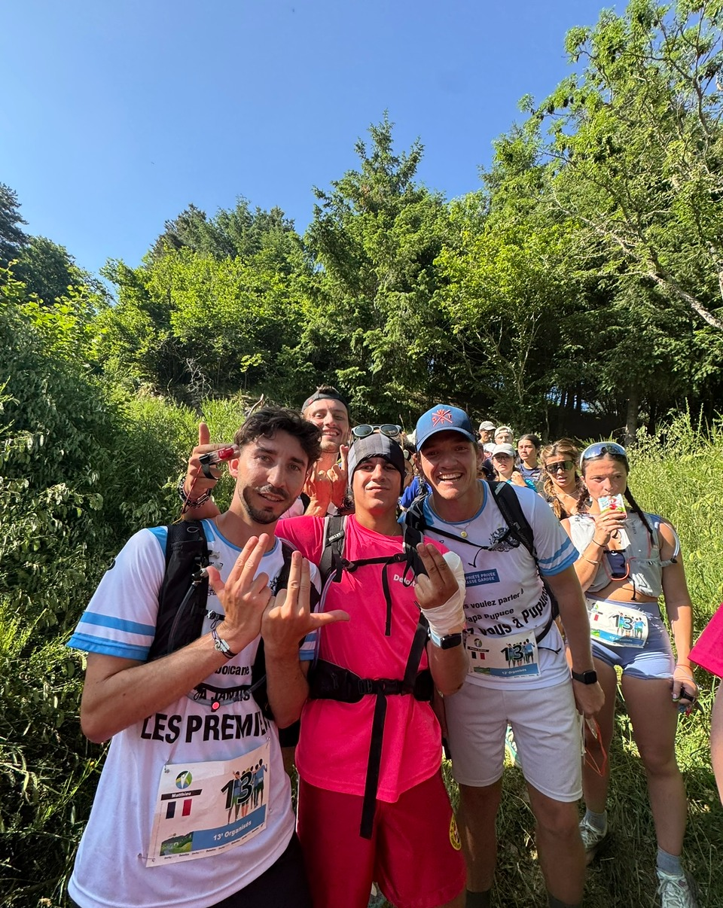
20 au 22 juin 2025 · Gorges de l'Allier
32e Derby Deloitte
Trois jours de trail, de kayak, de VTT, d'orientation de nuit et d'accrobranche avec l'équipe La Relève. Une place obtenue grâce à l'ESSCA.
« On a rien 100 rien »Glissez →
Phoxia × ESSCA × Deloitte02 / 14
20 juin · 9h
Départ pour l'Allier
Sac sur le dos, maillot rose sur les épaules : l'équipe La Relève au complet sur le quai, direction Chanteuges.
phoxia.fr/esscaJour 1
Phoxia × ESSCA × Deloitte03 / 14
20 juin · 16h
Premier trail
Dès l'arrivée, départ sous l'arche du Derby pour 14,65 km de sentiers et de balises en 2h39.
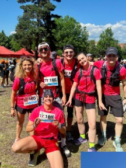
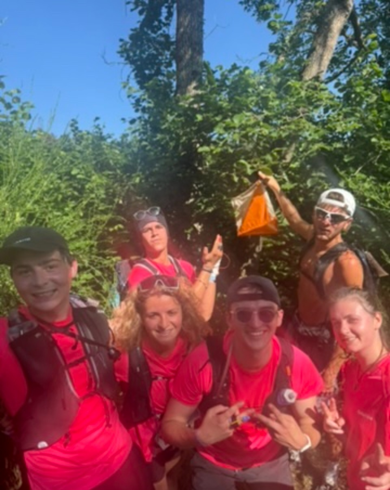
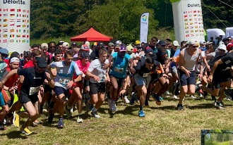
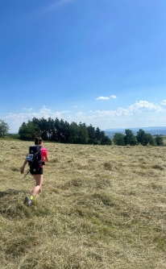
phoxia.fr/esscaJour 1
Phoxia × ESSCA × Deloitte04 / 14
20 juin · 19h
Premier kayak
À peine le trail fini, cap sur l'Allier : première descente en kayak, avant la nuit.
phoxia.fr/esscaJour 1
Phoxia × ESSCA × Deloitte05 / 14
20 juin · 23h
L'épreuve nocturne
Frontale sur la tête et carte en main : une course d'orientation de nuit, balise après balise.
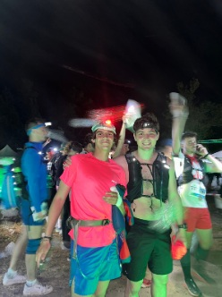
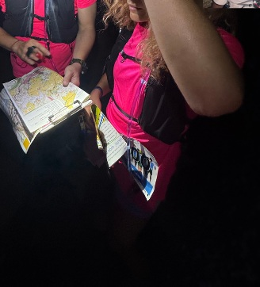
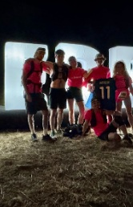
11,75km parcourus
485 mde dénivelé positif
1h52de course
8balises récupérées
Record perso sur 10 kmJour 1
Phoxia × ESSCA × Deloitte06 / 14
21 juin · 8h
Retour sur l'eau
Réveil matinal et deuxième épreuve de kayak sur l'Allier, entre les gorges et les rapides.
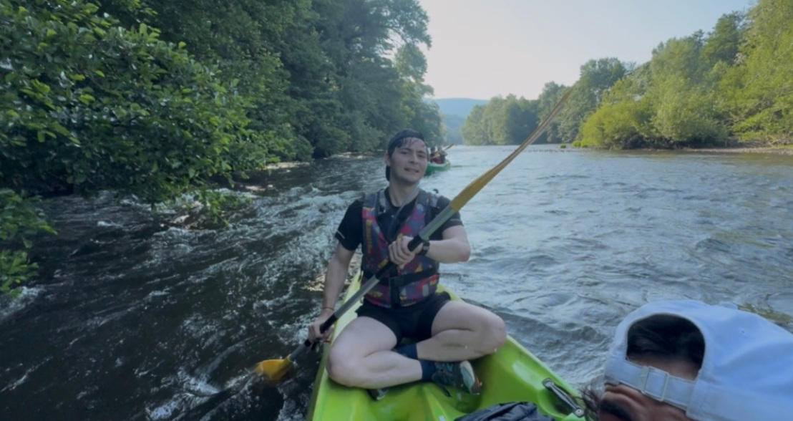
phoxia.fr/esscaJour 2
Phoxia × ESSCA × Deloitte07 / 14
21 juin · 9h
Dans les arbres
Enchaînement direct avec l'accrobranche : tyrolienne, filets et passerelles au-dessus du sol.
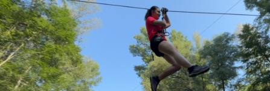
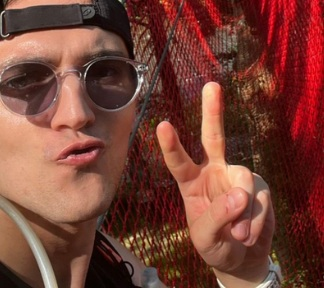
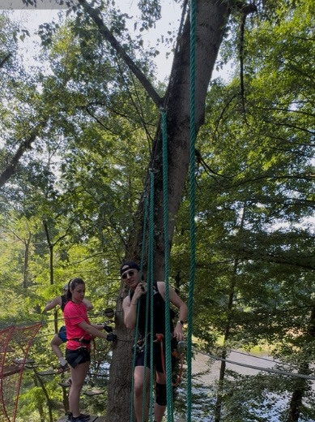
phoxia.fr/esscaJour 2
Phoxia × ESSCA × Deloitte08 / 14
21 juin · 10h
Trail avec vue
Deuxième trail, cette fois sur les hauteurs : pause photo face aux monts de Haute-Loire.
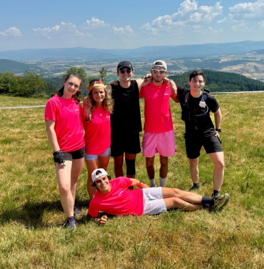
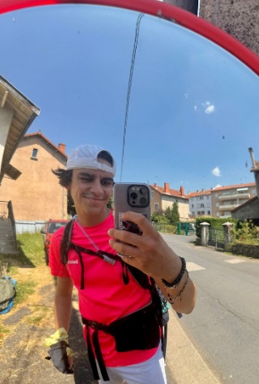
phoxia.fr/esscaJour 2
Phoxia × ESSCA × Deloitte09 / 14
21 juin · 14h
Étape VTT
Casque sur la tête, boucle entre Langeac et Chanteuges : ma plus longue sortie vélo à ce jour.
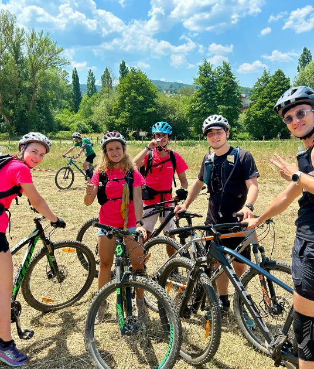
16,79km à vélo
373 mde dénivelé
1h45d'effort
phoxia.fr/esscaJour 2
Phoxia × ESSCA × Deloitte10 / 14
21 juin · 17h
Dernier trail
Troisième trail du week-end, les jambes lourdes mais le sourire intact, jusqu'à l'arche d'arrivée.
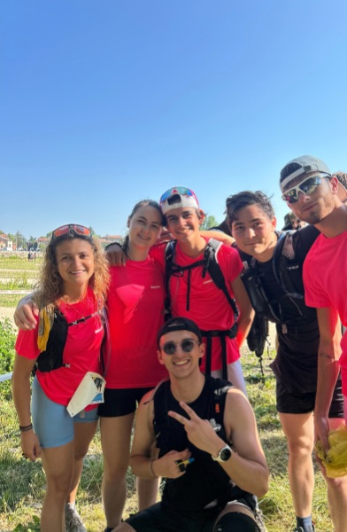
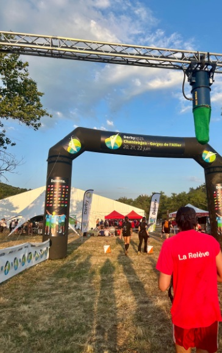
phoxia.fr/esscaJour 2
Phoxia × ESSCA × Deloitte11 / 14
21 juin · Le soir
Soirée et remise des prix
Coucher de soleil sur le village du Derby, remise des prix sur scène puis la fête sous le chapiteau.
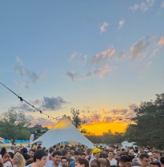
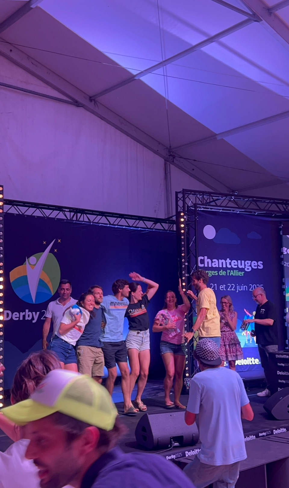
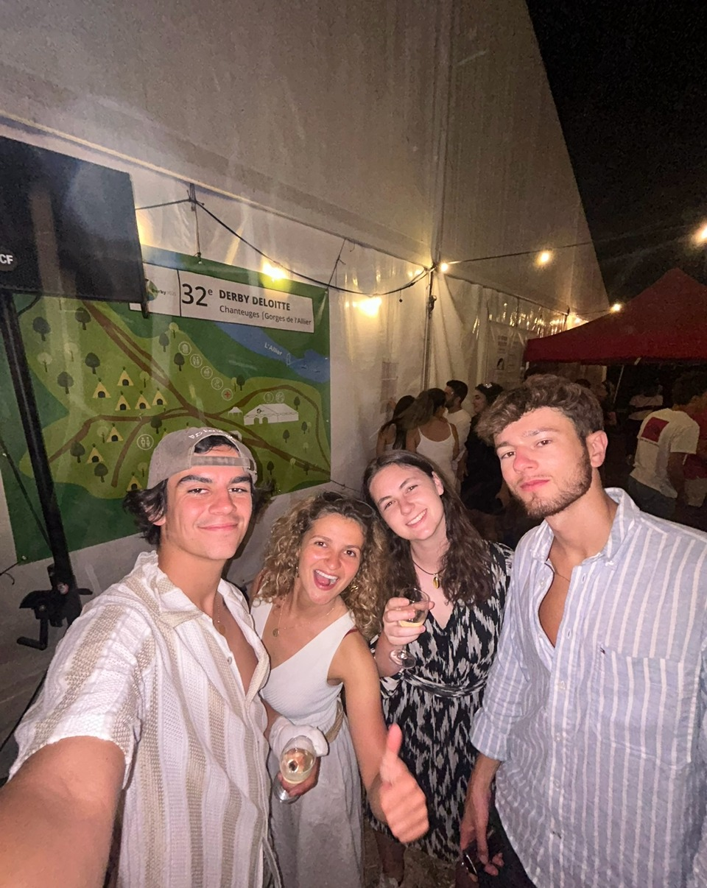
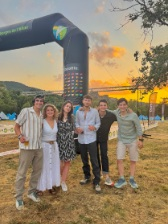
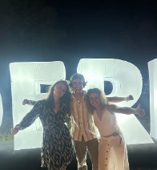
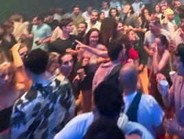
phoxia.fr/esscaJour 2
Phoxia × ESSCA × Deloitte12 / 14
22 juin · 10h
Fin du Derby
Départ à 10h : trois jours dans les jambes, quelques siestes bien méritées et beaucoup de souvenirs dans le train du retour.
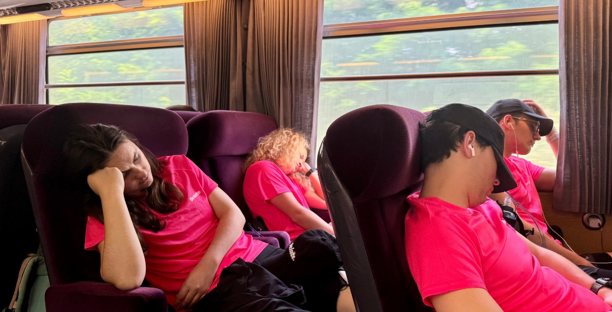
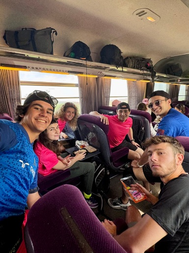
phoxia.fr/esscaJour 3
Phoxia × ESSCA × Deloitte13 / 14
Le Derby en chiffres
32eédition du Derby Deloitte
3jours, du 20 au 22 juin 2025
8épreuves : 3 trails, 2 kayaks, VTT, nocturne et accrobranche
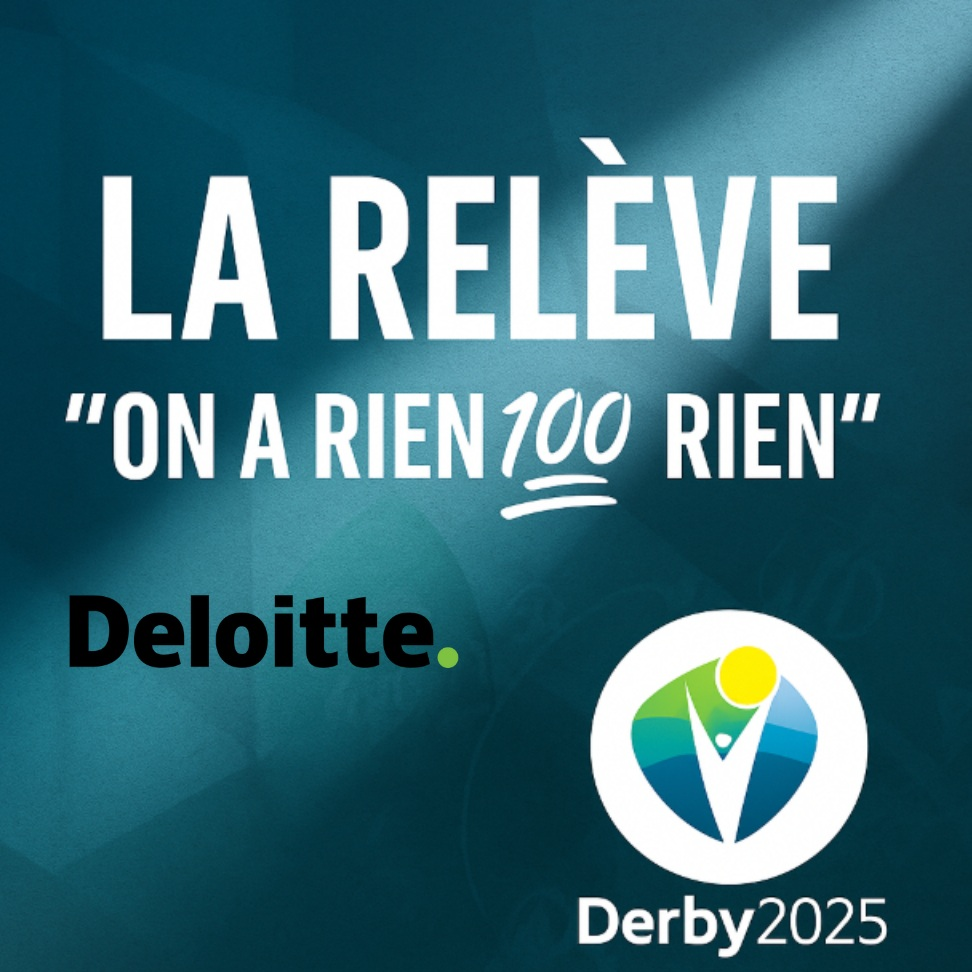
Équipe La Relève
« On a rien 100 rien »
Encore une fois, c'est le réseau de l'ESSCA qui m'a ouvert la porte.
Mathieu Barthélémy, fondateur de Phoxia
Merci l'ESSCA et Deloitte@phoxia.fr
Phoxia × ESSCA × Deloitte14 / 14
Mes contacts
On en parle ?
+33 7 82 59 09 91
mathieu@mbconsulting.partners
Marseille · Paris · Québec (bientôt)
mbconsultingdotpartners.wordpress.com
Derby Deloitte 2025@phoxia.fr